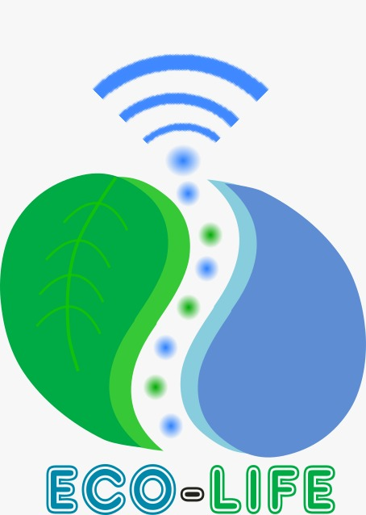

Pureza a tu alcance
BIENVENIDOS
NOSOTROS SOMOS ECO-LIFE
 Eco-Life es una empresa dirigida a la población en general, ya que nuestro propósito es producir sistemas dosificadores de agua automatizados, que permitan a la población tener acceso a este vital liquido de una manera fácil, sencilla y de acuerdo a sus posibilidades, contribuyendo a disminuir la contaminación derivada de las botellas de PET ya que el consumidor podrá reutilizar sus botellas. Aunando que se ofrecerá una aplicación móvil que permitirá monitorear los niveles del contenedor de agua en el que se encuentra y así lograr que sea un sistema eficiente y de gran utilidad para la sociedad.
México se considera el primer país consumidor de agua embotellada en el mundo por el mal manejo de los plásticos y por falta de conciencia ecológica de su consumo (Malacara, 2018).
Actualmente existe un grave problema medioambiental con la gran cantidad de desechos de botellas de plástico, ya que ha visto como esas botellas llegan a calles, ríos y mares afectando severamente a la flora y fauna de los ecosistemas.
Es por ello que requiere concientizar y tomar acciones para minimizar estos efectos negativos que están destruyendo a la naturaleza, que es nuestra fuente de vida.